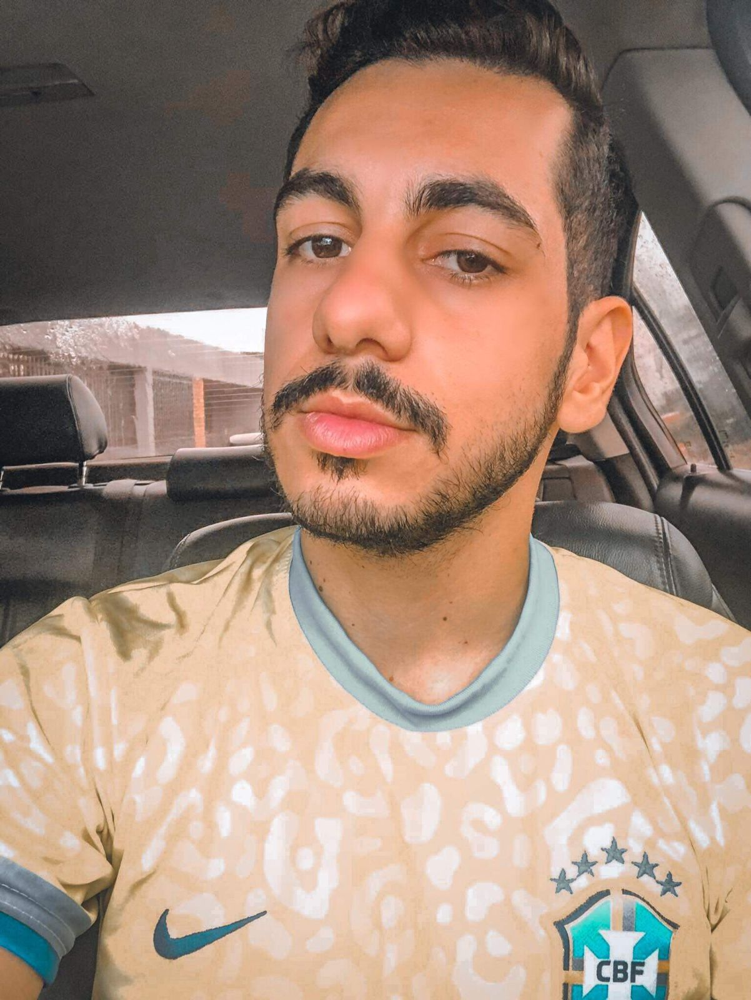
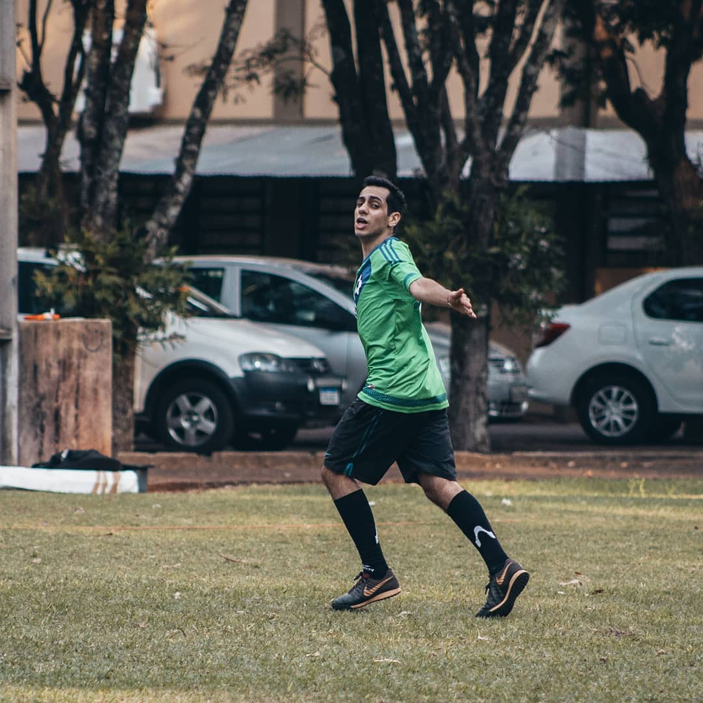
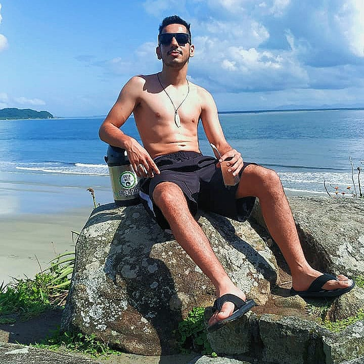
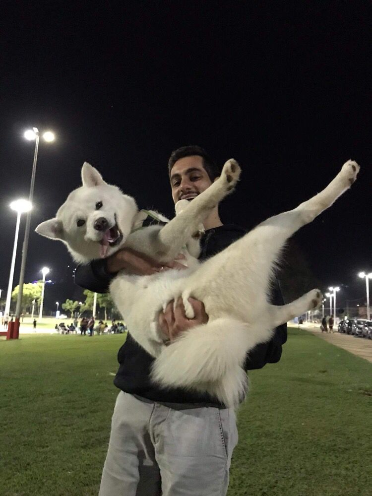
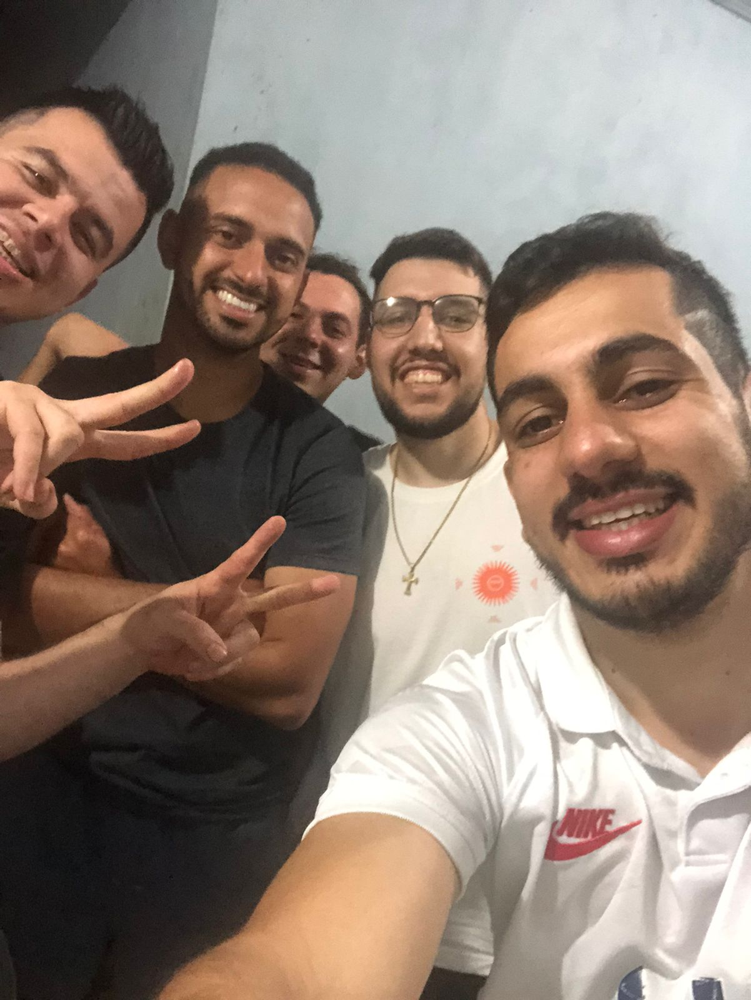
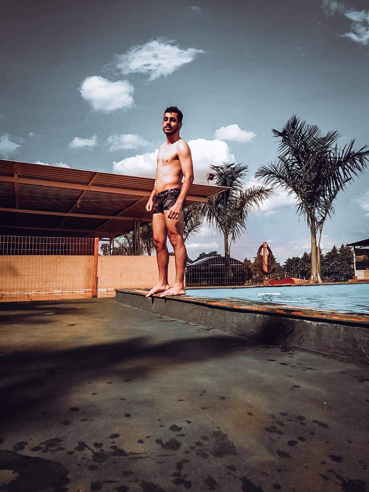

BEM VINDOS AO SITE DO LUCAS MÜLLER RODRIGUES

QUEM É LUCAS?
Olá, sou Lucas Müller Rodrigues, tenho 24 anos, nasci em 1998 no dia 15 de fevereiro e estou cursando o primeiro período de TSI (Tecnologia em Sistemas para Internet).
Me consideraro uma pessoa companheira e engraçada, sempre busco ajudar a todos em minha volta.
Adoro viajar, conhecer lugares novos, fazer churrasco com os amigos e passear com a família.
Gosto de ir a academia e de praticar diversos tipos de esportes, sendo o futebol o que eu mais gosto e pratico desde quando era criança.
Abaixo segue algumas fotos onde estou fazendo o que gosto:
    
HISTÓRIA COM COMPUTADOR:
Meu primeiro contato com os os computadores foi em uma Lan House, onde tive acesso ao "Orkut" e os diversos jogos que existiam dentro dele, o que me dispertou muito o interesse.
Tive o meu primeiro computador com 11 anos, em 2009. Naquela época, a velicidade, tanto da internet quanto a do computador, eram muito baixas, o que fazia eu passar a maior parte do tempo jogando os jogos que ja vinham instalados nos computadores (Pinball, Sudoku, etc).
Como desde pequeno tive acesso ao computador e com o avanço da tecnologia, passei a me interessar cada vez mais sobre os mesmos. Com isso, fiz alguns cursos de programação e percebi que era isso que eu queria para minha vida, saber programar e conhecer cada parte das coisas que envolvem computação e internet.
Trabalhei por 7 anos em uma empresa de laticínios e percebi que aquilo não era pra mim, foi ai então que resolvi sair de la e buscar uma vaga na área em que atuo. Hoje em dia trabalho como suporte técnico em uma empresa de comunicação e permaneço buscando aprender sempre mais para me tornar um programador técnico completo.